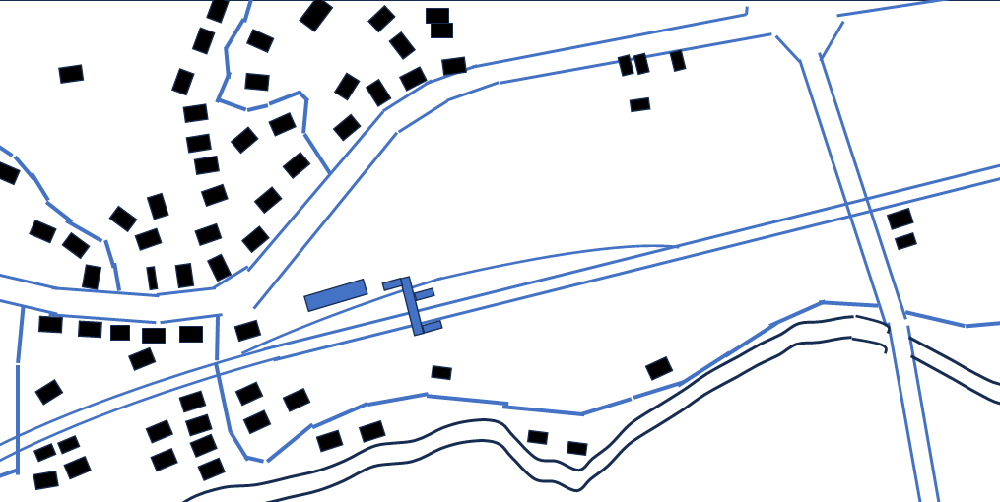

小田急線鶴川駅（待避線が新設された1977年頃の風景）
オリンパスPEN-EE(白黒ハーフサイズカメラ)による記録
このHPについて
小田急線鶴川駅待避線新設工事(1977年)関係年表
使い方：
1. 地図上の番号をクリックすると、その地点の写真一覧が表示されます。
2. サムネイルをクリックすると拡大写真が表示されます。
3. 写真のファイル名の"W""SE"などは、撮影の方向8方位(N,NE,E,SE,S,SW,W,NW)を表しています。
4. 拡大写真の画面では再び地図に戻ることができます。

閉じる